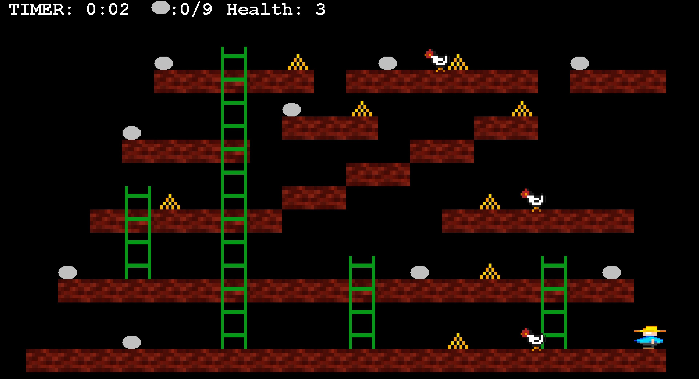

Coding Projects
Main Languages: Java, HTML 5, CSS, Racket
Secondary Languages: JavaScript, Python, C
To Learn: R, MATLAB, C++, Swift and SQL
Growing up, I was always very design, creation and art-oriented, never imagining that I could excel in a STEM field, even though I loved tech and science. That mindset stayed until I started learning more about engineering, and how its inherent purpose was to create solutions that solved problems. This was when I decided to take a leap of faith, so I went to UW's Engineering Camp to gain more exposure.
I immediately realized from my experiences there that I loved combining the fields of technical, STEM-related subjects with my design-oriented passions to create tangible programs and solutions. Here I am, learning more everyday about tech and programming and loving it!
Chuckie Egg - GUI in Java
